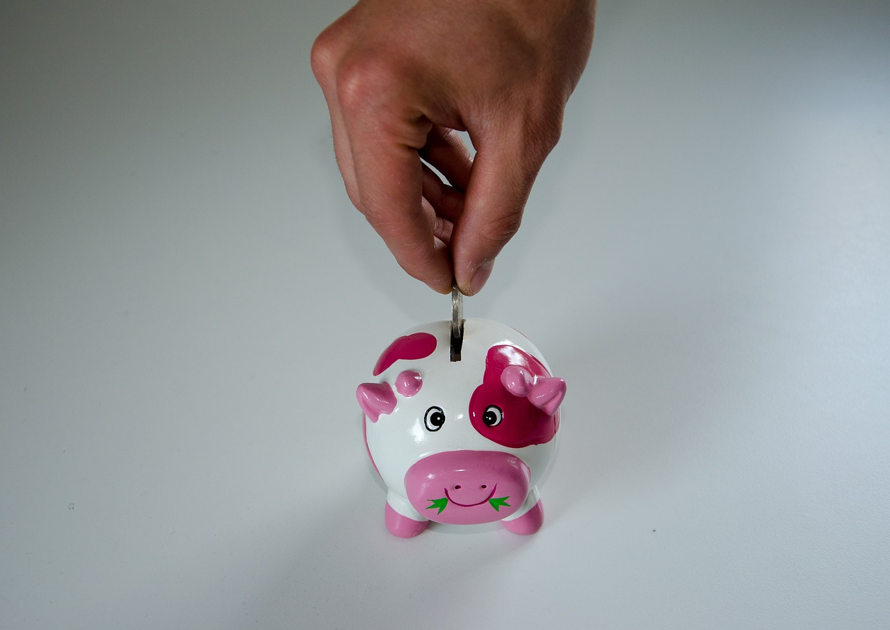
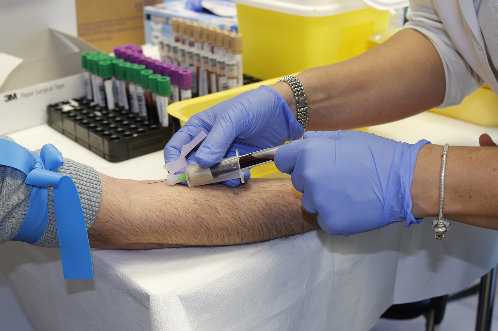

Cuenta Regresiva - Preparándome para la Jubilación: Pasos Importantes para una Transición Exitosa

La jubilación es un hito en la vida de una persona que marca el final de una etapa laboral activa y el comienzo de un nuevo capítulo lleno de oportunidades y desafíos diferentes. Prepararse para la jubilación no solo implica consideraciones financieras, sino también aspectos emocionales, de estilo de vida y de salud. En este artículo, exploraremos los pasos importantes para una transición exitosa hacia la jubilación.
1. Evaluar la Situación Financiera
Uno de los aspectos cruciales al prepararse para la jubilación es tener una comprensión clara de tu situación financiera. Evalúa tus ahorros, inversiones, cuentas de jubilación y otros activos para determinar si estás en camino de mantener tu calidad de vida deseada durante la jubilación. Si es necesario, considera trabajar con un asesor financiero para planificar estratégicamente y asegurarte de tener recursos suficientes para cubrir tus necesidades y deseos en los años venideros.
2. Establecer Objetivos y Pasiones
La jubilación no solo significa dejar de trabajar, sino también tener tiempo libre para explorar nuevos intereses y pasiones. Antes de jubilarte, reflexiona sobre lo que realmente te apasiona y considera cómo podrías dedicar tiempo a esas actividades. Ya sea viajar, aprender nuevas habilidades, hacer trabajo voluntario o emprender un proyecto personal, establecer objetivos claros te dará un propósito significativo durante esta nueva fase de la vida.
3. Cuidar la Salud
Mantener una buena salud es esencial para disfrutar plenamente de la jubilación. Antes de jubilarte, asegúrate de someterte a exámenes médicos de rutina y discute cualquier preocupación con tu médico. Además, adopta hábitos de estilo de vida saludables, como una dieta equilibrada y ejercicio regular, para mantener tu bienestar físico y mental.
4. Redefinir las Relaciones Sociales
El trabajo no solo proporciona un sentido de logro, sino que también ofrece oportunidades para interactuar con colegas y mantener relaciones sociales. Antes de jubilarte, piensa en cómo mantendrás y cultivarás tus relaciones personales y sociales. Participar en grupos comunitarios, clubes o actividades sociales puede ayudar a mantener una red de apoyo sólida.
5. Planificar el Tiempo Libre
La abundancia de tiempo libre puede ser emocionante, pero también puede sentirse abrumadora si no se planifica adecuadamente. Crea una rutina diaria flexible que incluya tiempo para tus intereses, ejercicios, descanso y tiempo con amigos y familiares. Tener una estructura en tu día a día puede proporcionar un equilibrio saludable entre la relajación y la actividad.
6. Explorar Opciones de Voluntariado o Trabajo a Tiempo Parcial
Si bien la jubilación marca el final de tu carrera principal, no significa que debas detenerte por completo. Muchas personas encuentran satisfacción al continuar trabajando a tiempo parcial o involucrarse en actividades de voluntariado. Estas actividades pueden no solo brindar un propósito adicional, sino también una oportunidad para contribuir a la comunidad.
En resumen, prepararse para la jubilación implica una planificación cuidadosa y una reflexión profunda sobre tus deseos, necesidades y metas para esta nueva fase de la vida. Al abordar aspectos financieros, emocionales y de estilo de vida, puedes asegurarte de que tu jubilación sea una experiencia gratificante y enriquecedora.